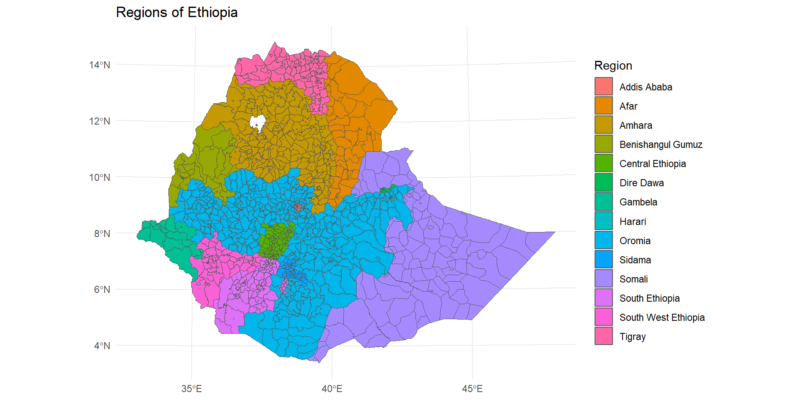

Spatial Data Analysis Training
National Data Management Center for Health at EPHI and AAU Department of Statistics
December 25-29, 2024
Outlines
-
Source, Format, and Types of Spatial Data
- What is GIS? What is spatial data and why should we use it?
- Types of spatial data
- Formats of Spatial Data
- Sources of Spatial Data/ Exploring spatial data
-
Basic R Packages for Spatial Data Management and Modelling
- Data Management Packages
- Data Visualization and Mapping Packages
- Modelling Packages
-
Overview of Spatial and Non-Spatial Data Exploration and Modelling
- Background: Spatial epidemiology, epidemiological data
- Data exploration/summarization techniques for spatial and non-spatial datasets
- Spatial versus non-spatial modelling approach
- Changing research questions into statistical thinking
Outlines
-
Spatial Exploratory Data Analysis
- Visualizing spatial data
- Disease mapping
- Spatial autocorrelation for areal data
- Variogram for geostatistical data
-
Spatial Data Modelling
- Modelling framework
- Areal data modelling
- Geostatistical data modelling
- Spatial prediction (if time allows)
- Bayesian Disease mapping (if time allows)
Source, Format, and Types of Spatial Data
What is GIS? What is spatial data and why should we use it?
-
GIS (Geographical Information Systems):
A system designed to capture, store, manipulate, analyze, manage, and visualize spatial or geographic data.
Integrates data from multiple sources to provide insights into spatial patterns and relationships.
Spatial data, also known as geospatial data, refers to information that identifies the geographic location and characteristics of natural or constructed features and boundaries on the Earth.
This data is often represented in terms of Cartesian coordinates (x,y) for two-dimensional maps, but may also include altitude (z) for a three-dimensional representation.
-
Spatial data is essential for analyzing relationships within a geographical context.
- It is widely used in health helps map disease spread, identify hotspots, allocate resources, and monitor environmental impacts on health, and urban planning.
-
Spatial Data can be collected in either
- Satellite Imagery: Captured by remote sensing satellites, these images can provide data on land cover, vegetation, weather patterns, and more.
- GPS Surveys: Use Global Positioning System technology to collect precise location data for mapping and navigation purposes.
- Traditional Surveying Methods: Involve measuring angles, distances, and elevations to map out areas accurately, often using tools like theodolites and total stations.
Spatial Data Formats
Let us see a basic way to represent the spatial data.
But there is a variety of data formats to represent the data to suit different applications.
In most cases, spatial data formats are an extension of existing data formats.
Spatial Data Formats Categorized by Type
Spatial Data Formats Categorized by Type
| Type | Spatial Data Formats |
|---|---|
| Text Files |
|
| Binary/Compressed |
|
| Images |
|
| Databases |
|
Spatial Data Types
- Spatial Data can be broadly categorized into 2 types - Vector and Raster.
- But what is the difference between raster and vector data?
- *When should we use raster and when should we use vector features?_
Vector Data: Overview
-
Vectors are representations of spatial data using points, lines, and polygons.
- They represent real-world features at varying levels of detail, depending on the map scale.
- Unlike rasters, vectors are not made up of grids or pixels. Instead, they consist of:
- Vertices: Specific coordinate points.
- Paths: Lines connecting the vertices.
-
Points: are individual XY coordinates, typically latitude and longitude, with a spatial reference frame.
- They are used to represent features too small to be displayed as polygons.
- Example: Cities shown as points on a global map.
- They are simple, precise locations, and they are efficient for small-scale maps.
- They are used to represent features too small to be displayed as polygons.
Lines connect multiple vertices using paths, forming linear features (e.g., Rivers, roads, and pipelines).
-
Polygons are formed by connecting vertices in a closed path (e.g., Building footprints, agricultural fields).
- Used to represent areas with measurable attributes (e.g., square footage, acreage).
- First and last coordinates of a polygon are the same to close the shape.
-
Vector data are high accuracy and aesthetically pleasing graphics.
- Not dependent on grid size and they are ideal for network analysis.
But processing can be intensive due to complex topology rules.
Raster Data: Overview
-
Raster data is a grid of pixels (or grid cells) where each cell represents a value. Values can represent various attributes like:
- Colors (e.g., satellite images), Elevation (e.g., digital elevation models) and Continuous phenomena (e.g., temperature, rainfall).
-
Raster data can be either discrete or continuous.
- Discrete Rasters: Represent distinct classes or categories (eg.: Land cover types (e.g., urban = 1, forest = 2).
- Consist of integers to define clear boundaries.
-
Continuous Rasters: Represent data that changes gradually (eg.: Elevation, temperature).
- Derived from a fixed reference point (e.g., sea level).
-
Raster data are easy to understand and perform map algebra operations.
- They are inefficient for linear or network data, large file sizes with increased resolution.
Summary of Vector vs Raster datas
|
Type Vector Data |
Sub type
|
| Raster Data |
|
| Additional information (Attribute data): |
|
What are the most common Vector data formats?
Commonly used Vector data Formats:
| File Type | Description and Extension |
| Shapefile |
|
| GeoJSON |
|
| GML(Geography Markup Language) |
|
What are the most common Raster data formats?
Commonly used Raster data Formats:
| File Type | Description |
GeoTIFF (.tif, .tiff) |
|
JPEG2000 (.jp2, .j2k)
|
|
Erdas Imagine (.img)
|
|
ECW (Enhanced Compressed Wavelet) .ecw
|
|
What are the components of spatial data
-
Geometry: Refers to the coordinates that define the shape of an object.
- Coordinates: These can be in different coordinate systems, such as geographic (latitude) and longitude) or projected systems.
- Types of Geometries: Common types include points, lines, and polygons.
- Dimension: Geometry can also have dimensional attributes like 2D (x, y), 3D (x, y, z), or even 4D (x, y, z, time).
-
Topology: Defines spatial relationships like adjacency, connectivity, and containment.
Rules:
- No overlaps.
- Lines meet at nodes.
- Closed polygon boundaries.
Attribute Data: provide detailed information about spatial features.
Coordinate Reference Systems (CRS):
Geospatial data relies on CRS to define locations on the Earth’s surface.
A CRS contains both a datum and a projection.
Common CRS include WGS84 (GPS coordinates) and UTM (Universal Transverse Mercator).
-
Frequently encountered datums:
- WGS84 – World Geodetic System (created in) 1984. The origin is the center of the earth.
- NAD27 & NAD83 – North American Datum 1927 and 1983, respectively. The origin for NAD 27 is Meades Ranch in Kansas.
- ED50 – European Datum 1950
CRS Formats
-
Numerous formats are used to document a
CRS. Three common formats include:-
proj.4;EPSG; Well-known Text (WKT).
-
Basic R Packages for Spatial Data Management and Modelling
Rpackages for spatial data
R offers several packages for geospatial data analysis
-
sf: Modern and efficient handling of spatial data as simple features, fully integrates withdplyr. -
sp: Older standard for spatial data in R, widely supported but less user-friendly compared tosf. -
rgdal: It offers functions to read and write geospatial data in various formats. -
raster: Designed for raster data handling, but supports some vector operations. -
terra: A modern replacement forraster, faster and more memory-efficient, with support for both data types. -
tmap: Simplifies creating static and interactive thematic maps, works withsfandspobjects. -
leaflet: Interactive maps for web, fully supports spatial data visualization with popups and layers. -
mapviewfor interactive web mapping -
spatstat: for point pattern analysis
sf() package
sf package (simple features = points, lines, polygons) is the new.
-
Therefore, we focus on the sf package for the following reasons:
- sf ensures fast reading and writing of data
- sf provides enhanced plotting performance
- sf objects can be treated as data frames in most operations
- Geographic data is stored in the special geometry column.
- sf functions can be combined using
%>%operator and works well with the tidyverse collection of R packages. - sf function names are relatively consistent and intuitive (all begin with
st_)
The sf package is a modern alternative to the traditional sp, rgeos, and rgdal packages.
st_*() functions
Common functions to manipulate sf objects include the following:
st_read()reads asfobject,st_write()writes asfobject,st_crs()gets or sets a new coordinate reference system (CRS),st_transform()transforms data to a new CRS,st_intersection()intersectssfobjects,st_union()combines severalsfobjects into one,st_simplify()simplifies asfobject,st_coordinates()retrieves coordinates of asfobject,st_as_sf()converts a foreign object to asfobject.
read and understand Shapefiles with sf
We can read a shapefile or a
sfobject with thest_read()function of sf.For example, here we read the
ET_Admin3_2023.shpat Ethiopia which contains the region, zone and districts of Ethiopia.
- select and rename variables using
dplyrpackage.
Examine
- Below are a few common functions that use to examine our data. They are not from the sf package but they are very useful.
Simple feature collection with 3 features and 8 fields
Geometry type: MULTIPOLYGON
Dimension: XY
Bounding box: xmin: 37.51639 ymin: 13.68366 xmax: 38.56573 ymax: 14.89357
Geodetic CRS: WGS 84
FNID Country Region Zone Woreda Shape_Leng
1 ET2023A3010101 Ethiopia Tigray Northwest Tigray Tahtay Adiyabo 3.926501
2 ET2023A3010103 Ethiopia Tigray Northwest Tigray Zana 1.109448
3 ET2023A3010104 Ethiopia Tigray Northwest Tigray Tahtay Koraro 2.275121
Shape_Area FNID_A1 geometry
1 0.37426931 ET2023A301 MULTIPOLYGON (((37.52639 14...
2 0.04774669 ET2023A301 MULTIPOLYGON (((38.497 13.9...
3 0.06962166 ET2023A301 MULTIPOLYGON (((38.43626 14...- The
sfobjectethR_shapeis adata.framecontaining a collection with- 1141 simple features (rows) and 9 attributes (columns) plus a list-column with the geometry of each feature.
-
A
sfobject contains the following objects of classsf,sfcandsfg:sf(simple feature): each row of thedata.frameis a single simple feature consisting of attributes and geometry.sfc(simple feature geometry list-column): thegeometrycolumn of thedata.frameis a list-column of classsfcwith the geometry of each simple feature.sfg(simple feature geometry): each of the rows of thesfclist-column corresponds to the simple feature geometry (sfg) of a single simple feature.
The sf package stores geometric features in a data frame.
Geographic data is stored in the special geometry column.
Inspect key columns and summary:
[1] "FNID" "Country" "Region" "Zone" "Woreda"
[6] "Shape_Leng" "Shape_Area" "FNID_A1" "geometry" Subsetting Spatial Data Frames
- Focus on specific regions, zones, or woredas:
- If we are interested in mapping something in the 4 regions of country: Tigray, Afar, Amhara, Oromia. The
Regioncolumn in the ethR_shape.shp contains the names of each region. We will use that as our subsetting column. Let’s call it region_4.
Spatial Transformations
a. Transform CRS
- Convert to a different coordinate reference system if needed:
Coordinate Reference System:
User input: WGS 84
wkt:
GEOGCRS["WGS 84",
DATUM["World Geodetic System 1984",
ELLIPSOID["WGS 84",6378137,298.257223563,
LENGTHUNIT["metre",1]]],
PRIMEM["Greenwich",0,
ANGLEUNIT["degree",0.0174532925199433]],
CS[ellipsoidal,2],
AXIS["latitude",north,
ORDER[1],
ANGLEUNIT["degree",0.0174532925199433]],
AXIS["longitude",east,
ORDER[2],
ANGLEUNIT["degree",0.0174532925199433]],
ID["EPSG",4326]]Simple feature collection with 1141 features and 8 fields
Geometry type: MULTIPOLYGON
Dimension: XY
Bounding box: xmin: -162480.1 ymin: 376090.6 xmax: 1494221 ymax: 1646839
Projected CRS: WGS 84 / UTM zone 37N
First 10 features:
FNID Country Region Zone Woreda
1 ET2023A3010101 Ethiopia Tigray Northwest Tigray Tahtay Adiyabo
2 ET2023A3010103 Ethiopia Tigray Northwest Tigray Zana
3 ET2023A3010104 Ethiopia Tigray Northwest Tigray Tahtay Koraro
4 ET2023A3010105 Ethiopia Tigray Northwest Tigray Asgede
5 ET2023A3010106 Ethiopia Tigray Northwest Tigray Tselemti
6 ET2023A3010107 Ethiopia Tigray Northwest Tigray Sheraro town
7 ET2023A3010108 Ethiopia Tigray Northwest Tigray Shire Endaslasie town
8 ET2023A3010109 Ethiopia Tigray Northwest Tigray Selekleka
9 ET2023A3010110 Ethiopia Tigray Northwest Tigray Seyemti Adyabo
10 ET2023A3010111 Ethiopia Tigray Northwest Tigray Adi Daero
Shape_Leng Shape_Area FNID_A1 geometry
1 3.9265010 0.374269311 ET2023A301 MULTIPOLYGON (((340975.3 15...
2 1.1094484 0.047746694 ET2023A301 MULTIPOLYGON (((445673.4 15...
3 2.2751214 0.069621658 ET2023A301 MULTIPOLYGON (((439235.7 15...
4 2.3274188 0.134341222 ET2023A301 MULTIPOLYGON (((388463.3 15...
5 2.1683607 0.153435050 ET2023A301 MULTIPOLYGON (((381572.5 15...
6 0.4018419 0.006060853 ET2023A301 MULTIPOLYGON (((372705.9 15...
7 0.1477838 0.001221733 ET2023A301 MULTIPOLYGON (((424871 1561...
8 1.3106139 0.033449913 ET2023A301 MULTIPOLYGON (((441545.7 15...
9 1.3794723 0.061695376 ET2023A301 MULTIPOLYGON (((432113.4 16...
10 1.5071146 0.056097753 ET2023A301 MULTIPOLYGON (((428420.1 15...b. Create Buffers
- Generate buffers around each feature
- buffers are areas created around spatial features at a specified distance.
- eg. Measuring access to hospitals or clinics within a certain radius.
Simplify Geometries
Simplify polygons to reduce complexity:

Visualize the Data
- If the changing of our data worked, we should be able to plot our data.. Let’s plot country.
So what happened?
- Well, if you only use the plot() function, that particular shapefile will plot not only the shapefile geometry but also the geometry for every column in the dataset (except for the geometry column
- which contains the spatial data
- the other columns are our tabular descriptive data).
Above are 8 maps. How many columns were there? Check code below:
- checking the number of columns, subtracting 1 as the geometry column doesn’t plot
- st_geometry() makes our life easier.
- The function goes inside the plot() function and the dataset we want to plot goes inside. Like this:
st_geometry()
Or use ggplot2
- We can delete some of the polygons by taking a subset of the rows of
map.